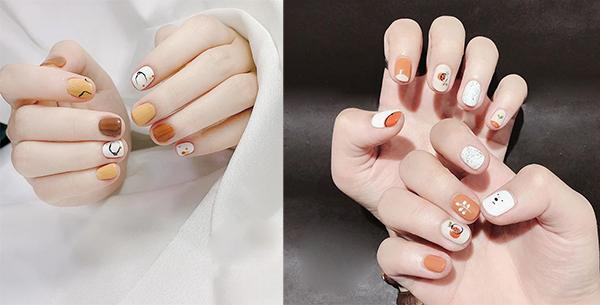

Simple and elegant nail designs are loved by many women. This nail model has a design suitable for ladies who like glamour. Owing this nail model, you can easily mix and match makeup to confidently appear anywhere and in any situation.
Cute simple nail designs often have simple, soft but also full of personnality designs that will help the hands of girls, students, office students become impressive. Owning this nail design hepls you have a perfect and beautiful appearance no matter whrer you appear.
Simple nail designs come in many colors and designs. These simple beautiful nail designs will make you very attractive thanks to simple motifs such as circle, cartoons, squares or checkred shapes, flowers ..., dotted on the nails. This beautiful nail design is very suitable for parties or going anywhere.
The simple personality nail designs have a variety of colors and designs. Owning this nail model will hepl you become very charming and attractive, thanks to simple motifs such as circles, cartoons, stripes or checkers, flowers, ... dotted on your nails. This personality nail model is very suitable for going to a party or going anywhere to create a highlight for the sisters.
Simple nail designs for short nails have a lot of variety to choose from. The nails are trimmed, painted, painted with neat and eye-catching textures that will help the girl's hands become more prominent, attractive and personality.
On important days, in addition to the wedding dress, a simple nail set will help you become more attractive and radiant than ever. Beautiful nails gor bride have many simple patterns for you to choose from such as lace, gems or simple decorative patterns.
"Simple nails for students" is a keyword that many young people are interested in searching for. These nail designs give her a gentle style that will make it easiter to choose paint colors.
Simple nude nail model is focused and interested by many people. That's why this nail model has never been HOT in the nail community. Express your elegant beauty the following elegant and beautiful nude nail polish samples.
Blue brings a new carefree beauty, close to nature. Blue nail design always makes girls more attractive, more confident to shine. In particular, these nail designs are very simple and easy to do at home.
Simple red nail design not only helps you stand out from the crowd but it also brings good luck. The red nail design is the perfect choice to help your nails be both subtle but equally outstanding.
Simple pink nail design gives you a deminine and gentle style. With simple gentle textures combined with panit colors, these nail designs will make you fall in love.
Black color always brings a mysterious style and indescribable charm. Beautiful black nail design gives you a mysterious and charming look.
Simple nail designs going to school always give you a unique experience. Simple nail designs for school have many unique artistic colors. Wherever you are, you can try these nail designs for moments of fun and elegance.
If you want to break the way, want to change the classic color schemes ever, then white is the ideal choice. The white nail designs with unique textures bring fresh beauty, and full of life to the owners.
Simple summer nail designs will you a colorful impression in summer. You can combine many unique ideals with whimsical motifs, and use your hands to coordinate with natural trends, such as coconut tress, tree canopy, seashells, etc. To create realistic ocean paintings.
New Year's nail designs have a variety of patterns for you to choose from in combination with accessories such as rhinestones such as rhinestones, flowers, ... and many colors to make your hands stand out. Owning thí nail design will make your hands more attractive no matter where they appear.
Floral nail designs with simple motifs are no longer strange to nail belivers. This nail model has become the trend of young people, because of romantic elegance.
Simple nail designs for the elderly have quite a variety of options. You choose nail designs with gentle colors and decorative motifs to make your hands more lively.
Pastel nail sets bring gentle femininity but no less luxurious. Pastel colors are to put together, especially if you add some pretty little textures, nothing can be more perfect.
For dark skin, there are quite a few tones you can choose from such as dark tones, such as plum red, gray gray ... not only can significantly lighten skin tones but also bring a youthful charm to you. These beautiful nail designs can freely change the matte paint color, in addition, they can be combined with stripes or rivets to make the hands more attractive.